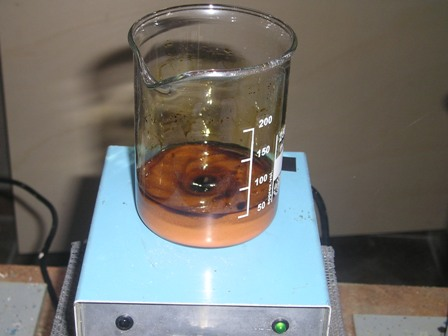
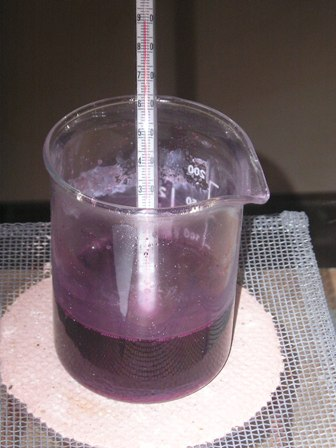
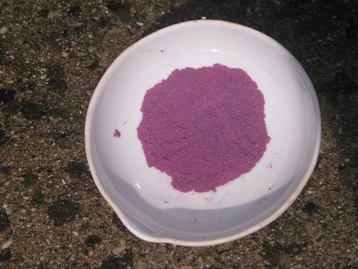

Prendendo spunto da un post dell'amico Marco sul suo Blog, ho replicato la preparazione di un sale complesso del cobalto, precisamente il dicloruro di pentaminoclorocobalto [Co(NH3)5Cl]Cl2, per vedere come si presenta "de visu" questo composto di coordinazione.
Avevo già in archivio un paio di procedure di preparazione (abbastanza simili tra loro e mai provate) e ne ho testata una; probabilmente quella usata da Marco & C. sarà stata ancora leggermente diversa.
Del resto si sa che ogni chef ha la sua ricetta personalizzata... e che la chimica sperimentale talvolta assomiglia stranamente alle metodiche di una buona cucina... a parte i prodotti naturalmente!
Allora, mano alle pentole, fuoco ai fornelli e via con gli ingredienti!
Per la ricetta del giorno ci serve:
- un cucchiaino di ammonio cloruro
- un cucchiaio di cobalto cloruro esaidrato
- mezzo bicchiere di ammoniaca
- uno spruzzo abbondante di acqua ossigenata
- un bicchierino di acido cloridrico
- acqua quanto basta, con ghiaccio ancora meglio
La reazione da ottenere è questa:
4 CoCl2 + 4 NH4Cl + 20 NH3 + O2 --> 4 [Co(NH3)5Cl]Cl2 + 2 H2O
Bando agli scherzi, ora scrivo seriamente la semplice procedura: in becker da 250 ml sciogliere 6 g di NH4Cl in 40 ml di ammoniaca concentrata e mescolando continuamente aggiungere 12 g di CoCl2.6H2O a piccole porzioni.
Risulta un fango marrone; continuando a mescolare aggiungere molto lentamente 10 ml di H2O2 al 30%.

Quando l'effervescenza è finita la soluzione sarà molto scura; ora, molto lentamente aggiungere 30 ml di HCl concentrato (fumate abbondanti tra i due amici per la pelle HCl ed NH4OH) e notare che la soluzione cambia colore ancora, assumendo una tonalità violacea scura.
A questo punto, sempre mescolando, riscaldare a 85° per una ventina di minuti. Lasciando raffreddare si nota il formarsi di un precipitato poco abbondante; poichè il composto da ottenere è discretamente solubile, per aumentare la resa raffreddare con ghiaccio e filtrare poi su buchner la sottile polvere di [Co(NH3)5Cl]Cl2.
Lavare velocemente con qualche porzione da 5 ml di acqua ghiacciata.

Seccare a 90° fino ad ottenere una polvere microcristallina di color malva, una via di mezzo tra il lilla e il viola.

I pochi grammi di prodotto ottenuto, dopo essere stati ben guardati, osservati e fotografati, saranno sacrificati a miglior causa forse già nella prossima puntata: costituiranno il materiale di partenza per la preparazione di un altro complesso di coordinazione: il [Co(NH3)5NO2]Cl2, pentaminonitrocobalto dicloruro.
Vedremo come sarà costui...
2 commenti